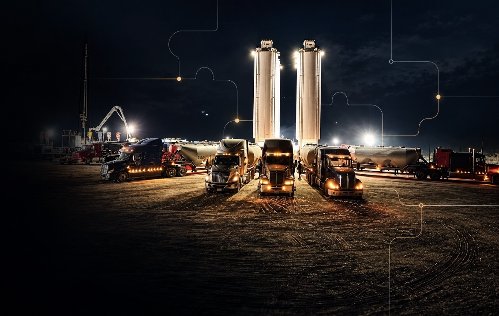

01
BEFORE THE FIRST LOAD
PLAN THE MOVEMENT.
Align the jobsite, schedule, sand requirements, carrier plan, staging space and operating constraints before trucks begin moving toward location.
OILFIELD SERVICES / SAND COORDINATION
Sand Shark provides field coordination and logistics support for frac sand operations — connecting material movement, trucking, staging, site activity, communication, and operational demands into one organized field process.
WHAT WE DO
A frac operation is more than a truck arriving at a location. It is a moving system of people, schedules, equipment, material, communication, and site requirements.
Sand Shark provides coordination support around that system. The focus is keeping the sand movement organized, maintaining communication between the people involved, and helping field activity stay aligned with the operation as conditions change.
FOLLOW THE MATERIAL
Sand does not simply arrive at a frac site. It moves through a controlled sequence of planning, dispatch, staging, delivery and field execution. Scroll through the sequence to watch material build at the operation.
BEFORE THE FIRST LOAD
Align the jobsite, schedule, sand requirements, carrier plan, staging space and operating constraints before trucks begin moving toward location.
FROM SOURCE TO LOCATION
Keep the delivery sequence tied to actual field demand so incoming trucks support the job instead of creating congestion, gaps or unnecessary wait time.
CONTROL THE QUEUE
Organize truck arrivals, lease-road movement and staging activity so the next load is ready without overwhelming the active pad.
AT THE EQUIPMENT
Coordinate material into the site configuration in use — including silos, boxes, pneumatic systems, hopper-bottom or belly-dump workflows and other sand-handling setups.
STAGE AFTER STAGE
Maintain communication and adjust the sequence as conditions change so material availability, truck flow and field execution stay connected through the job.
WHAT SAND SHARK DELIVERS
From wet and dry sand to belly dumps, pneumatic equipment, boxes, silos, staging and last-mile coordination, Sand Shark is built around the field logistics that keep material moving and crews connected.

FIELD EXECUTION
BUILT FOR FIELD REALITY
Every delivery is part of a larger sequence. Trucks have to arrive in the right order. Material has to reach the right point. Site traffic has to stay controlled. Information has to move before the operation does.
Sand Shark brings those moving pieces together through practical field coordination, clear communication and logistics support designed around active frac operations.
READY FOR THE FIELD
Sand Shark approaches field work with a focus on safety awareness, qualified personnel, site-specific requirements, communication and disciplined execution. The details of our operating standards and personnel qualifications are available on the Safety page.
SERVICE REACH
Sand Shark is positioned to support frac-sand and field logistics operations across North America, with communication and coordination structured around the realities of active jobsites and changing schedules.